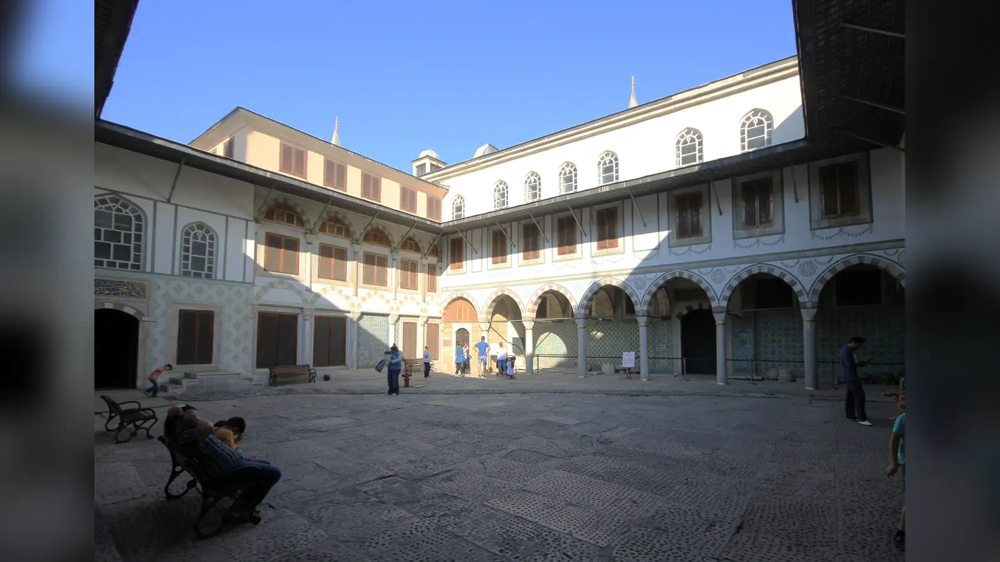
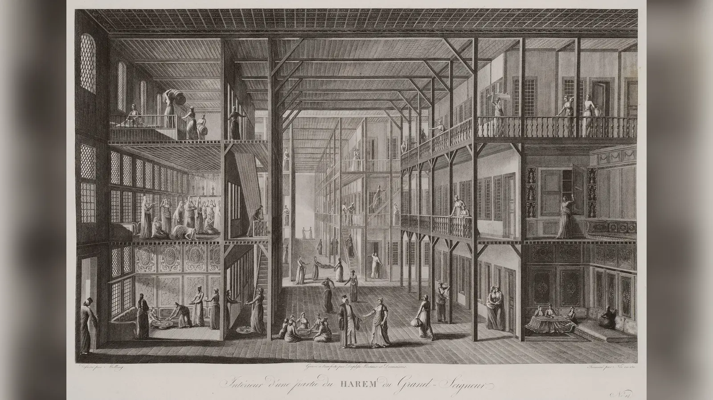
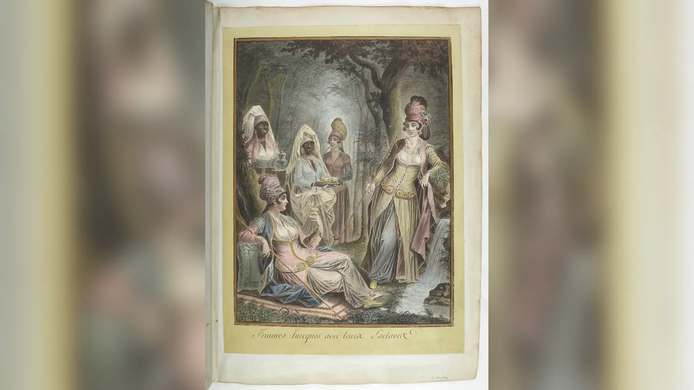
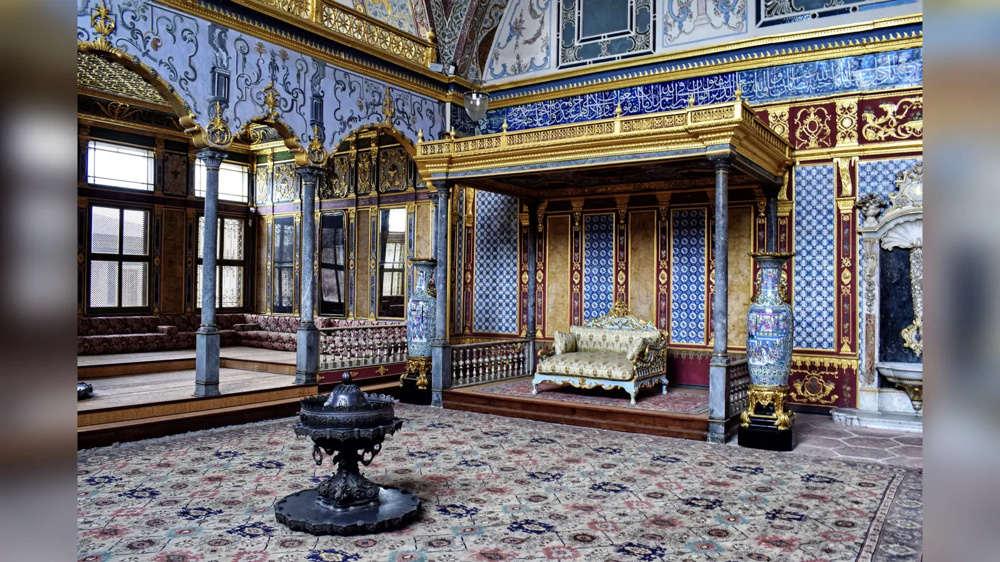
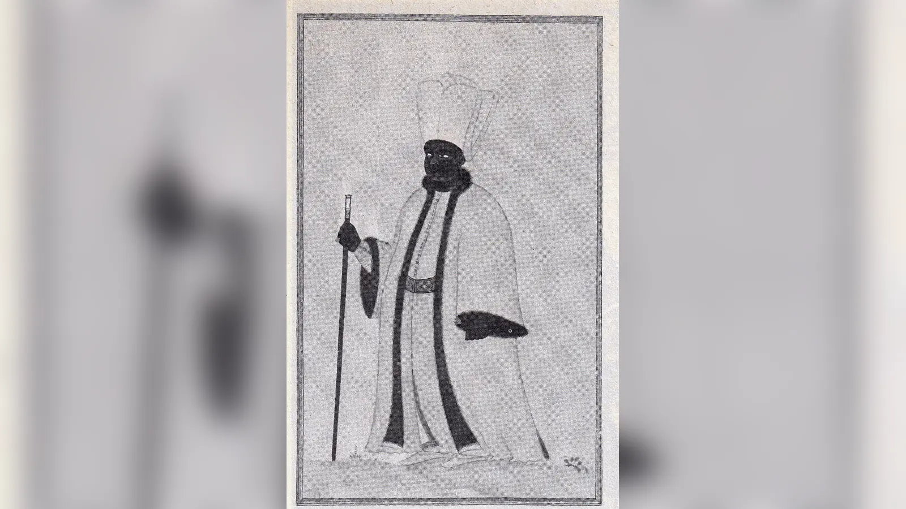
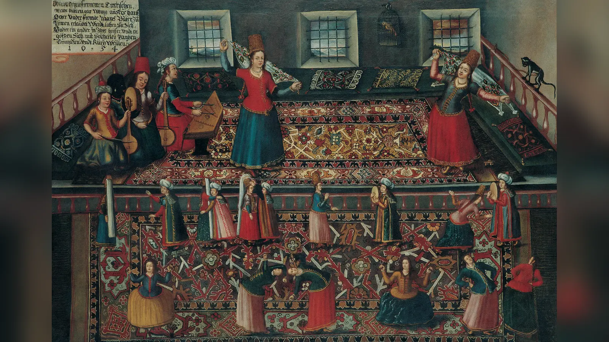

Bir kapının ardında yüzlerce kadın, ortalarında dilediğini seçen bir padişah, hamamlar, müzik ve bitmek bilmeyen saray eğlenceleri… Osmanlı haremi denildiğinde bugün bile birçok insanın zihninde buna benzeyen bir görüntü beliriyor. Ne var ki bu görüntünün önemli bir bölümü Osmanlı sarayının kendi kayıtlarından değil, Harem-i Hümayun’un içine hiç girmemiş Avrupalı erkeklerin anlatılarından, 19. yüzyıl Oryantalist ressamlarının hayal ettiği sahnelerden ve çok daha sonra bu hayalleri yeniden üreten roman, dizi ve filmlerden geliyor. Gerçek harem ise bu fanteziden hem daha düzenli hem daha sert hem de siyasi bakımdan çok daha ilginçti.
Harem elbette padişahın özel hayatının geçtiği bir mekândı. Hanedanın devamı burada sağlanıyor, padişahın çocukları burada doğuyor ve yetişiyordu. Bu nedenle cinselliği tamamen anlatının dışına çıkarmak da tarihi bozardı. Fakat yüzlerce insanın yaşadığı ve çalıştığı bir saray kurumunu yalnız padişahın cinsel hayatıyla açıklamak, Topkapı Sarayı’nın mutfaklarını yalnız hükümdarın ne yediği üzerinden anlatmaya benzer. Haremdeki kadınların büyük bölümü padişahın cinsel partneri değildi. Hizmet görüyor, eğitim alıyor, belirli görevlerde yükseliyor, başka kadınların maiyetinde çalışıyor, bazıları zamanla özgür bırakılıyor ve evlendirilerek saray dışına çıkıyordu. Şehzadeler, sultanlar, hanedan çocukları, valide sultan, farklı derecelerdeki kadın görevliler ve hadım ağaları da bu dünyanın parçalarıydı.
Harem-i Hümayun’un asıl tarihsel önemi burada ortaya çıkar. Osmanlı sarayında özel hayat ile devlet hayatı, modern anlamda birbirinden bütünüyle ayrılmış iki dünya değildi. Padişah aynı anda hem bir ailenin reisi hem de imparatorluğun hükümdarıydı. Onun annesi sıradan bir anne, oğlu sıradan bir çocuk, kızının evliliği de yalnız aile meselesi değildi. Hanedanın devamı, hükümdara erişim, şehzadelerin geleceği, evlilikler, himaye ilişkileri ve saray içindeki bilgi akışı siyasi sonuçlar doğurabiliyordu. Bu nedenle haremin kapalı olması, siyasetten kopuk olduğu anlamına gelmez. Tam tersine, hükümdara erişimin son derece sınırlı ve değerli olduğu bir düzende kimin padişaha yaklaşabildiği, kimin ona bilgi ulaştırabildiği ve hanedan çocuklarının çevresinde kimlerin bulunduğu başlı başına bir güç kaynağıydı.
Fakat buradan “harem kadınları Osmanlı Devleti’ni perde arkasından istedikleri gibi yönetiyordu” sonucuna atlamak da aynı ölçüde yanıltıcıdır. Harem kadınları Divan-ı Hümayun’un doğal üyeleri değildi; sadrazamın, kazaskerin veya defterdarın resmî yetkilerini taşımıyorlardı. Bazı valide sultanlar, hasekiler ve hanedan kadınları olağanüstü nüfuz kazanırken aynı veya benzer unvanları taşıyan başka kadınların etkisi çok daha sınırlı kaldı. Nüfuz ile resmî yönetim aynı şey değildi. Haremin tarihini anlamak için bu iki kavramı birbirinden ayırmak gerekir.
Üstelik harem yalnız yükselme hikâyelerinden oluşmuyordu. Kurumun temelinde kölelik vardı. Saraya getirilen cariyeler hukuken özgür kişiler değildi; yaşamları üzerinde kendilerinin belirlemediği bir otorite bulunuyordu. Bazıları eğitim, maddi güvence, statü, özgür bırakılma ve güçlü evlilikler sayesinde çağdaşlarının büyük bölümünün ulaşamayacağı imkânlara erişebildi. Bu durum başlangıçtaki zorunlu yer değiştirme ve özgürlük kaybını ortadan kaldırmaz. Harem tam da bu nedenle tek renkle anlatılamaz: eğitim kurumu, hizmet örgütü, hanedan evi, kölelik düzeni ve iktidara erişim alanı aynı yapının içinde bulunuyordu.
Harem Kelimesi Gerçekte Ne Anlama Geliyordu?
“Harem” sözcüğü Arapça kökenlidir ve yasaklanmış, korunmuş, mahrem veya erişimi sınırlandırılmış alan düşüncesiyle bağlantılıdır. Dolayısıyla kelimeyi doğrudan “padişahın kadınları” diye çevirmek baştan yanlış bir çerçeve kurar. Osmanlı sarayındaki Harem-i Hümayun, hükümdarın özel hanedan dairesiydi. Burada padişahın ailesi, kadın saray mensupları ve onların hizmet düzeni bulunuyor; mekâna erişim sıkı biçimde denetleniyordu.
“Harem” aynı zamanda yalnız imparatorluk sarayına özgü bir kelime değildi. Osmanlı evlerinde aile mahremiyetine ayrılan bölüm de harem olarak adlandırılabiliyor, misafirlerin ve aile dışındaki erkeklerin kabul edildiği daha kamusal bölüm selâmlık olarak ayrılabiliyordu. Elbette sıradan bir İstanbul evindeki aile bölümüyle Harem-i Hümayun aynı kurum değildi. İmparatorluk haremi hanedanın devamının örgütlendiği, çok sayıda görevlinin bulunabildiği, kendi hiyerarşisi ve ekonomik kaynakları olan saray teşkilatının parçasıydı.
Bu anlam ayrımı, Avrupa dillerindeki “harem” imgesinin yarattığı karışıklığı da açıklar. Batılı seyahat ve sanat geleneğinde kelime giderek kadınların erkek bakışından saklandığı erotik bir mekânla özdeşleşti. Osmanlı bağlamında ise mahremiyet yalnız cinsel erişimin sınırlandırılması değildi; hükümdarın ve hanedanın özel alanına kimlerin girebileceğini belirleyen saray protokolünün parçasıydı.
Kapıların önemi de burada başlar. Topkapı Sarayı zaten birbirinin içine geçen avlular, kapılar ve erişim dereceleri üzerinden kurulmuş bir iktidar mimarisiydi. Harem bu sistemin en içteki alanlarından biriydi. Bir mekâna girebilmek, bir kişiye ulaşabilmek veya mesaj taşıyabilmek yalnız fiziksel hareket değildi. Sarayda yakınlık siyasi değer üretiyordu. Harem kapılarının ardında bulunmak herkese güç vermiyordu; fakat hükümdara ulaşan yolların azlığı, bu yollar üzerinde güvenilir bir konum elde eden kişilerin önemini artırabiliyordu.
Bu noktada harem ile “kadınlar dünyası”nı da birbirine eşitlememek gerekir. Harem öncelikle hanedanın mahrem alanıydı. İçinde kadınların sayısal ağırlığı çok büyüktü, fakat çocuklar, şehzadeler, padişah ve belirli erkek görevliler de bu düzenin içindeydi. Bu nedenle Harem-i Hümayun’u yalnız cinsiyet üzerinden değil, hanedan mahremiyeti ve kontrollü erişim üzerinden tanımlamak tarihsel işleyişi daha iyi açıklar.
Harem Altı Yüzyıl Boyunca Aynı Kurum Değildi

Bugün Topkapı Sarayı’nı gezen biri, gördüğü Harem dairelerinin Fatih Sultan Mehmed sarayı yaptırdığında bir defada bugünkü biçimiyle kurulduğunu düşünebilir. Oysa yapı yüzyıllar boyunca eklemeler, yangınlar, onarımlar ve yeni ihtiyaçlarla değişti. Osmanlı haremini de 15. yüzyıldan 19. yüzyıla kadar aynı unvanların, aynı nüfusun ve aynı gündelik düzenin değişmeden sürdüğü bir kurum gibi anlatmak mümkün değildir.
İstanbul’un fethinden sonra Beyazıt çevresinde kurulan Eski Saray, hanedan kadınlarının yaşamında uzun süre önemli yer tuttu. Topkapı, yani dönemin Yeni Sarayı, hükümdarlığın idari ve törensel merkezi olarak gelişirken kadın hanedan halkının önemli bir bölümü Eski Saray’da bulunmaya devam etti. Erken Yeni Saray’da da kadınların ve padişahın mahrem yaşamına ayrılmış alanların varlığına işaret eden araştırmalar vardır. Dolayısıyla “Topkapı’da başlangıçta hiç harem yoktu” demek de, “fetih biter bitmez bütün kadınlar bugün gördüğümüz Harem dairelerine yerleşti” demek de tarihsel gelişimi gereğinden fazla basitleştirir.
16. yüzyılda padişah ailesinin Topkapı’daki varlığı giderek arttı. Hürrem Sultan’ın saraydaki konumu bu dönüşümün önemli parçalarından biriydi, fakat popüler anlatıdaki gibi tek başına bir gün bütün haremi Eski Saray’dan Topkapı’ya taşıyan kişi değildi. Özellikle III. Murad döneminde, 16. yüzyılın sonlarına doğru hanedan yaşamının Topkapı’da yoğunlaşmasıyla Harem daireleri büyük ölçüde genişledi. Valide sultanın ve geniş kadın saray halkının Yeni Saray’daki ağırlığı daha görünür hâle geldi.
Eski Saray buna rağmen önemini bir anda kaybetmedi. Ölen veya tahttan indirilen padişahların kadınlarının ve bazı saray mensuplarının buraya gönderilebilmesi, yeni padişahın annesinin valide sultan olarak Topkapı’ya gelişi ve iki saray arasındaki insan hareketliliği, harem tarihinin tek bir bina üzerinden okunamayacağını gösterir. Harem bir mekândı, ama aynı zamanda hanedan yaşamını düzenleyen bir kurumlar ve ilişkiler ağıydı.
Daha sonraki yüzyıllarda unvanlar da değişti. 16. yüzyıldaki “haseki sultan” ile 18. ve 19. yüzyıllarda kullanılan kadınefendi veya ikbal gibi unvanları eş anlamlı kabul etmek yanlıştır. “Gözde” gibi kelimelerin popüler kültürdeki kullanımı da her dönemin resmî hiyerarşisini doğru biçimde yansıtmaz. İnternette sıkça görülen tek bir harem rütbe tablosunun Kanuni döneminden II. Abdülhamid dönemine kadar aynen geçerliymiş gibi sunulması bu yüzden yanıltıcıdır.
19. yüzyılda saray yaşamının Topkapı’dan Boğaziçi ve Beşiktaş çevresindeki yeni saraylara, özellikle Dolmabahçe’ye kaymasıyla harem mekânı ve protokolü yeniden değişti. Kurum aynı hanedanın özel dairesi olmayı sürdürse de mimari, saray kültürü, kölelik rejimi ve modernleşme baskıları önceki yüzyıllardan farklıydı. “Osmanlı haremi” dediğimiz şey aslında tek bir fotoğraf değil, altı yüzyıla yayılan bir dönüşüm hikâyesidir.
Bu tarihsel değişim, haremin siyasi rolünü anlamak için de önemlidir. Şehzadelerin sancaklara gönderildiği bir çağdaki harem ile şehzadelerin sarayda tutulduğu bir çağdaki harem aynı siyasi işleve sahip olamazdı. Padişahın annesinin oğluyla birlikte sancakta yaşadığı düzen ile çocuk yaşta tahta çıkan hükümdarın annesinin Topkapı’da merkezî konuma geldiği düzen arasında önemli fark vardı. Kurumun gücü, hanedan sisteminin geri kalanındaki değişikliklerle birlikte şekillendi.
Harem Yalnızca Kadınların Yaşadığı Bir Yer miydi?
Harem nüfusunun büyük bölümünü kadınlar oluşturuyordu, fakat burası yalnız yetişkin kadınlardan oluşan kapalı bir yurt değildi. Padişahın annesi olan valide sultan, padişahın eşleri veya çocuklarının anneleri, cariyeler, ustalar ve kalfalar, padişah kızları olan sultanlar, küçük şehzadeler ve diğer hanedan çocukları bu dünyanın içinde yer alabiliyordu. Padişahın özel daireleri de Harem-i Hümayun’un hanedan yaşamıyla doğrudan bağlantılıydı.
Şehzadelerin haremle ilişkisi yaşlarına ve döneme göre değişiyordu. Erken ve klasik dönemde belirli yaşa gelen şehzadelerin sancaklara gönderilmesi, annelerinin de çoğu zaman onlarla gitmesi hanedan kadınlarının saray içindeki konumunu etkiliyordu. Bir şehzade annesi yalnız Topkapı’da oğlunun geleceğini bekleyen kişi değildi; oğluyla birlikte taşrada bir şehzade hanesinin merkezinde bulunabiliyordu.
16. yüzyıl sonlarından itibaren sancak sisteminin gerilemesi ve şehzadelerin merkezde tutulmaya başlanmasıyla harem, erkek hanedan mensuplarının yaşamında farklı bir rol kazandı. Kafes olarak bilinen gözetimli yaşam düzeninin gelişmesi, veraset ile saray mahremiyetini daha doğrudan birbirine bağladı. Şehzadelerin saraydan ayrılıp taşrada yönetim tecrübesi kazanmadığı bir düzende onların gündelik çevresi de daha fazla saray içindeki kişilerden oluşmaya başladı. Bu dönüşümün kardeş katli ve veraset sistemiyle ilişkisini Kardeş katli yasası neden çıkarıldı? başlıklı incelememizde ayrıntılı biçimde ele almıştık.
Haremin erkek görevlileri arasında hadım ağaları özel bir yere sahipti. Erken dönemlerde beyaz hadımların, yani akağaların saray içindeki ağırlığı daha belirginken zamanla Afrika kökenli kara hadım ağalarının harem hizmeti ve güvenliğindeki rolü arttı. 16. yüzyılın sonlarında Darüssaade Ağalığı güçlü bir makam hâline geldi.
Hadım ağalarını yalnız kapıda nöbet tutan muhafızlar gibi düşünmek yanlış olur. Harem ile sarayın diğer bölümleri arasındaki kontrollü iletişimde, padişaha ve hanedan kadınlarına erişimde, mesaj ve taleplerin iletilmesinde önemli konumdaydılar. Darüssaade ağaları zamanla Haremeyn vakıflarıyla ilişkili görevleri ve geniş himaye ağları sayesinde sarayın dışına taşan ekonomik ve dinî nüfuz da kazanabildi.
Böylece haremin “kapalı” yapısının aslında nasıl çalıştığı görülür. Kapalı bir kurum dış dünyayla hiç ilişkisi olmayan kurum değildir. Aksine, dışarıyla temasın belirli kişiler ve kapılar üzerinden gerçekleşmesi, o kişileri daha önemli hâle getirebilir. Haremde iktidarın önemli kaynaklarından biri tam da erişimin kıt olmasıydı. Herkes padişaha ulaşamadığı için ulaşabilenlerin konumu değerliydi; herkes hanedan kadınlarıyla doğrudan haberleşemediği için güvenilir aracılar önem kazanıyordu.
Cariyeler Hareme Nasıl Geliyordu?

Harem anlatısının en fazla romantikleştirilen kelimelerinden biri “cariye”dir. Dizilerde veya popüler romanlarda cariye bazen saraya gönüllü biçimde giren genç kadın, bazen modern anlamda çalışan, bazen de yalnız padişahın sevgilisi gibi gösterilir. Hukuki gerçek daha açıktır: Cariye köle statüsündeki kadındı. Sarayda eğitim görmesi, değerli giysiler kullanması veya ileride özgürlüğünü kazanabilmesi, başlangıçta özgür olmadığı gerçeğini değiştirmez.
Cariyelerin kökeni dönemlere göre değişti. Osmanlı genişlemesinin erken dönemlerinde savaş ve esaret köle arzının kaynaklarından biriydi; ancak imparatorluk hareminin yüzyıllar süren tarihini yalnız “savaşta esir alınan kızlar” cümlesiyle açıklamak mümkün değildir. Köle ticareti Karadeniz, Kafkasya, Akdeniz ve başka bölgesel ağlarla bağlantılıydı. Özellikle sonraki yüzyıllarda Kafkasya kökenli kadınların saray ve seçkin hanelerdeki varlığı belirginleşti. İnsanların hangi yollarla köleleştirildiği, kimler tarafından satın alındığı ve saraya nasıl ulaştığı dönem ve coğrafyaya göre değişebiliyordu.
Bu sistem Atlantik dünyasındaki plantasyon köleliğiyle birebir aynı değildi. Osmanlı köleliği farklı hukuki özgürleşme yolları, ev içi ve saray hizmetleri, askerî-idari kölelik ve bazı kişiler için toplumsal yükselme imkânları barındırıyordu. Fakat farklı olması onu kölelik olmaktan çıkarmaz. Bir insanın satın alınabilmesi, satılabilmesi veya başkasının hukuki otoritesi altında bulunması temel bir özgürlük eşitsizliğidir. Osmanlı saray köleliğini açıklarken ne bütün kölelik sistemlerini birbirinin aynısı saymak ne de saraydaki yükselme örneklerinden hareketle kölelik gerçeğini yumuşatmak gerekir.
Saray haremi bu kölelik düzeninin seçkin bir koluydu. Buraya alınan kadınların tamamı padişaha sunulmuyordu. Tam tersine, harem nüfusunun işleyebilmesi için çok sayıda hizmet görevi vardı. Temizlikten çamaşıra, kıyafetlerden kahve ve sofra hizmetlerine, hazineden hamama, üst düzey kadınların maiyetinden çeşitli zanaatlara kadar farklı işler yürütülüyordu. Hiyerarşide yükselen kadınlar başka cariyeleri yöneten sorumluluklar üstlenebiliyordu.
Bu nokta “haremde yüzlerce kadın vardı, demek ki padişahın yüzlerce sevgilisi vardı” denklemindeki temel hatayı gösterir. Büyük bir saray hanesinin nüfusu ile hükümdarın cinsel partnerlerinin sayısı aynı şey değildir. Haremdeki kadın sayısı dönemden döneme büyük ölçüde değiştiği gibi, bu nüfusun çoğu hizmet ve saray organizasyonunun parçasıydı.
Kölelik ile yükselme imkânını aynı anda görmek gerekir. Saraya alınan bir kadın, dönemin sıradan köylü veya şehirli kadınından daha iyi beslenebilir, eğitim alabilir ve güçlü bir hanenin içine girebilirdi. Yüksek konuma çıkan bazı kadınlar büyük servet ve nüfuz elde etti. Fakat bu sonuca bakıp sisteme girişteki zorunluluğu silmek, yalnız başarılı örneklerden hareketle bütün kurumu romantikleştirmek olur. Haremdeki fırsatlar gerçekti; özgürlük sınırları da gerçekti.
Dahası, haremdeki yükselme ihtimali herkes için eşit değildi. Yaş, sağlık, beceri, saraya geliş koşulları, üst düzey kişilerin himayesi ve tesadüfler bir kadının hayatını değiştirebilirdi. Birkaç cariyenin padişah anneliğine kadar yükselmesi tarihsel olarak çarpıcıdır; fakat bu olağanüstü örnekleri kurumun ortalama deneyimi gibi sunmak, piramidin tepesinden aşağıdaki yüzlerce insanı görünmez kılar.
Haremde Eğitim Nasıl Veriliyordu?
Sarayın devamlılığı yalnız insan toplamakla sağlanamazdı. İçeri giren kişilerin sarayın dili, davranış kalıpları, protokolü ve hizmet düzenine uyum sağlaması gerekiyordu. Bu nedenle eğitim harem teşkilatının önemli parçalarından biriydi. Yeni gelen cariyeler yeteneklerine, yaşlarına, görevlerine ve içinde bulundukları döneme göre farklı ölçülerde Türkçe, dinî bilgiler, saray adabı, dikiş ve nakış, müzik, dans, okuma-yazma veya belirli hizmet becerileri öğrenebiliyordu.
Burada iki abartıdan kaçınmak gerekir. Birincisi, “harem kadınları cahildi ve yalnız güzellikleri için seçiliyordu” düşüncesidir. Saray gibi yüksek derecede törensel bir ortamda davranış, dil, beceri ve güvenilirlik önemliydi. İkincisi ise her cariyenin kapsamlı edebiyat, müzik ve ileri düzey okuma-yazma eğitimi aldığı modern bir okul hayal etmektir. Kaynaklar bütün kadınların aynı müfredattan geçtiğini göstermez.
Harem bazen “kadınlar için Enderun” diye tanımlanır. Benzetmenin açıklayıcı bir yanı vardır: Her iki yapı da saray hizmetine insan yetiştiriyor, seçme ve eğitim süreçleri içeriyor ve hükümdar hanesine bağlı elit personel üretebiliyordu. Fakat Harem-i Hümayun ile Enderun aynı kurumun kadın ve erkek şubeleri değildi. Hiyerarşileri, görevleri, toplumsal işlevleri ve kaynakları farklıydı. Benzetmeyi birebir eşitliğe dönüştürmek, iki kurumun özgün yapısını kaybettirir.
Eğitimin başka bir yönü de disiplin yaratmasıydı. Saray adabını öğrenmek yalnız nasıl selam verileceğini veya hangi törende nerede durulacağını bilmek değildi. Kimin önünde nasıl davranılacağı, hangi mekâna kimin girebileceği, üstlere itaat, sessizlik, güvenilirlik ve hiyerarşiye uyum saray düzeninin parçasıydı. Eğitim bu bakımdan kişisel gelişim kadar kurumsal biçimlendirmeydi.
Bir cariyenin yükselmesinde fiziksel çekicilik rol oynayabilirdi; ancak bütün kariyer sistemini güzelliğe indirgemek yetersizdir. Yetenek, hizmette başarı, üst düzey bir kadının himayesini kazanma, güvenilirlik, davranış, saray ağları ve bazı durumlarda padişahın ilgisi farklı yollar açabiliyordu. Padişahtan çocuk sahibi olmak ise bambaşka bir hanedan statüsü yaratabiliyordu.
Haremin gücü açısından eğitimin başka bir sonucu daha vardı. Sarayda yetişip daha sonra özgür bırakılan ve devlet görevlileriyle evlendirilen kadınlar, saray kültürünü ve bağlantılarını dışarı taşıyordu. Böylece harem yalnız içine insan alan kapalı bir kutu değil, yetiştirdiği kişileri saray çevresine dağıtan bir ağ merkezi hâline geliyordu. Bu ağ, resmî bir devlet teşkilatı değildi; fakat saray kültürünün ve hanedana bağlılığın daha geniş seçkin çevrelere yayılmasına katkıda bulunuyordu.
Burada Antik Bilge açısından önemli olan nokta, eğitimin iki yüzünü aynı anda görebilmektir. Eğitim bir cariyeye yeni beceriler ve yükselme imkânı sağlıyordu; aynı zamanda onu sarayın ihtiyaçlarına uygun bir hizmet insanına dönüştürüyordu. Dolayısıyla harem eğitimi ne yalnız baskı mekanizması ne de modern anlamda özgürleştirici okuldu. İkisini aynı yapıda birleştiren saray disiplininin parçasıydı.
Haremde Hiyerarşi Nasıl İşliyordu?
Harem eşit kadınlardan oluşan bir topluluk değildi. Yaş, görev, kıdem, padişahla ve hanedanla ilişki, çocuk sahibi olma, yöneticilik sorumluluğu ve himaye ağları statüyü belirliyordu. Fakat internette sıkça görülen “acemi cariye → kalfa → usta → gözde → ikbal → kadın → haseki → valide” şeklindeki tek ve değişmez kariyer merdiveni tarihsel olarak sorunludur. Bu unvanların tamamı aynı yüzyılda aynı sistem içinde kullanılmadı.
Hizmet hiyerarşisinde yeni gelen ve eğitim gören cariyelerden deneyimli kalfa ve ustalara uzanan dereceler vardı. Hazinedar usta gibi yüksek görevler, padişahın ve harem hazinesinin çevresinde önemli sorumluluklar taşıyabiliyordu. Haremdeki yönetim yalnız hanedan kadınlarının kişisel emirlerinden ibaret değildi; günlük işleyişi sağlayan deneyimli kadın görevliler bulunuyordu.
Hanedan hiyerarşisinin tepesindeki en önemli kadın çoğu dönemde valide sultandı: hüküm süren padişahın annesi. Valide sultanın konumu yalnız annelik duygusuyla açıklanamaz. Hükümdara benzersiz yakınlığı, geniş maiyeti, gelir kaynakları, vakıfları ve saray içindeki kıdemi ona önemli otorite sağlayabiliyordu. Bununla birlikte her valide sultan aynı siyasi güce sahip değildi. Padişahın yaşı, anne-oğul ilişkisi, valide sultanın kişisel ağı, saray grupları ve dönemin krizleri nüfuzun derecesini belirliyordu.
“Haseki” özellikle 16. ve 17. yüzyılın belirli bağlamlarında yüksek statülü padişah eşini veya gözdesini ifade eden güçlü bir unvana dönüştü. Hürrem Sultan bunun en meşhur örneğidir. Ancak hasekiyi 19. yüzyıl kadınefendileriyle doğrudan eşitlemek veya bütün Osmanlı tarihinde padişahın “resmî eşi” için kullanılan değişmez unvan saymak doğru değildir. Daha sonraki yüzyıllarda kadın, kadınefendi ve ikbal gibi başka statü ve unvanlar öne çıktı.
Padişahtan çocuk sahibi olmak kadınların konumunu etkiliyordu. Özellikle bir şehzadenin annesi olmak klasik veraset düzeninde kadının geleceğini oğlunun geleceğine bağlayabiliyordu. Şehzade sancağa gönderildiğinde annesi de onun hanesinin önemli figürü hâline gelebiliyordu. Oğlu tahta çıkarsa valide sultan olarak saray hiyerarşisinin zirvesine yükselmesi mümkündü. Fakat bütün çocuk annelerinin aynı servete veya etkiye sahip olduğu varsayılamaz.
Bu sistemde yükselme, modern anlamda özgür kariyer tercihi değildi. Hiyerarşi fırsat sunarken aynı anda bağımlılık üretiyordu. Bir cariyenin başarısı büyük ölçüde saray içindeki üstleriyle ilişkisine ve hanedanın ihtiyaçlarına bağlıydı. Haremde statü kazanmak kişinin maddi koşullarını ve hareket alanını genişletebilir, ama kurumun temelindeki eşitsizliği otomatik olarak ortadan kaldırmazdı.
Hiyerarşinin siyasi sonucu da buydu. Haremde herkes padişaha eşit uzaklıkta değildi. Valide sultan, üst düzey kadınlar, hazinedar gibi güvenilir görevliler ve belirli hadım ağaları bilgi ve erişim zincirinde daha avantajlı konumdaydı. Güç, yalnız “unvan sahibi olmak”tan değil, hiyerarşinin neresinde durduğundan ve kime ulaşabildiğinden doğuyordu.
Padişah Bütün Cariyelerle Birlikte Oluyor muydu?
Hayır. Harem hakkında en yaygın ve en kolay düzeltilebilecek yanlışlardan biri budur. Haremde bulunan yüzlerce kadının tamamının padişahın cinsel partneri olduğu düşüncesinin tarihsel dayanağı yoktur. Böyle bir sistem hem sarayın günlük işleyişiyle hem hiyerarşik erişim düzeniyle bağdaşmaz.
Padişaha ulaşmak zaten sarayın her alanında ayrıcalıktı. Harem içinde de kadınların tamamı hükümdarın özel dairesine serbestçe giremiyordu. Çok sayıda cariye hayatını saray hizmetinde geçirip padişahla hiçbir cinsel ilişki kurmadan haremden ayrılabiliyordu. Büyük nüfusun önemli bölümü hizmet, eğitim ve idari görevlerin gereğiydi.
Bunun tersine gidip haremi cinsellikten tamamen arındırmak da doğru değildir. Harem hanedanın biyolojik devamının merkezlerinden biriydi ve padişahın cariyelerle ilişkisi veraset açısından son derece önemliydi. Osmanlı hanedanının özellikle klasik döneminde köle kökenli kadınlardan çocuk sahibi olma pratiği, hükümdar evliliklerinin ve hanedan siyasetinin biçimini etkiledi.
“Padişahla bir gece geçiren kadın hemen sultan olurdu” biçimindeki popüler anlatı da yanlıştır. Padişahın ilgisini kazanmak statüyü değiştirebilirdi; çocuk doğurmak daha belirleyici sonuçlar yaratabilirdi. Fakat statüler dönemden döneme farklılaştı ve her ilişki aynı kurumsal sonucu doğurmadı. Bir kadının hükümdarın çocuğunu doğurması, özellikle erkek şehzade anneliği, onun hanedan içindeki yerini güçlendirebilirdi; ancak bunun siyasi etkisi padişahın dönemine ve veraset düzenine göre değişirdi.
Erken ve klasik dönemde şehzade anneliği, oğlun gelecekteki hükümdarlık ihtimali nedeniyle özellikle önemliydi. Hürrem Sultan döneminde bu modelin bazı yönleri değişti; birden fazla oğul sahibi olması, Süleyman’la nikâhlanması ve sarayda kalıcı konum kazanması önceki pratiklerden ayrılan özellikler taşıyordu.
Haremde cinselliğin kendisi bile yalnız özel zevk meselesi değildi. Hangi kadının çocuk sahibi olduğu, çocuğun hayatta kalması, şehzadenin gelecekteki veraset ihtimali ve anne-çocuk hanesinin konumu hanedanın geleceğini etkiliyordu. Dolayısıyla padişahın özel hayatı devletin devamından tamamen ayrı değildi. Haremi siyasi açıdan önemli yapan temel çelişkilerden biri de buydu.
Oryantalist “sınırsız cinsel erişim” imgesi bu yapıyı tersine çevirir. Gerçek haremde asıl belirleyici olan sınırsızlık değil, erişimin kontrol edilmesiydi. Padişah teorik olarak hanenin en güçlü erkeğiydi, fakat harem nüfusunun varlık nedeni ona sürekli cinsel erişim sağlamak değildi. Hanedanın devamını ve saray hizmetini düzenlemekti.
Haremde Gündelik Hayat Nasıldı?

Haremde sıradan bir günün sabah saat yedide şu faaliyetle başlayıp şu saatte bittiğini söyleyen ayrıntılı programlar çekici görünür, fakat yüzyıllarca değişen bir kurum için böyle kesin bir çizelge uydurmak doğru değildir. Elimizde saray masraf kayıtları, maaş ve tayinat bilgileri, vakfiyeler, mimari kalıntılar, kronikler, elçi raporları ve farklı dönemlere ait anlatılar vardır. Bunlar gündelik yaşamın parçalarını gösterir; her cariyenin her gününü dakika dakika anlatmaz.
Yine de harem hayatının boş zaman üzerine kurulmadığını biliyoruz. İbadet, kişisel temizlik, eğitim, üstlere hizmet, yemek düzeni, dikiş ve nakış gibi işler, törenler, müzik ve çeşitli eğlenceler gündelik hayatın parçaları olabiliyordu. Bayramlar, düğünler, doğumlar ve hanedan törenleri olağan rutinden farklı günler yaratıyordu. Statüsü yüksek kadınların yaşamıyla yeni gelen bir cariyenin işi ve mekânı aynı değildi.
Topkapı Haremi’nin mimarisi bu hiyerarşiyi taşta görünür hâle getirir. Dar koridorlar, kapılar, avlular ve birbirine eklenmiş daireler, popüler dizilerde görülen tek parça dev salonlardan farklıdır. Cariyeler koğuşları, hamamlar, valide sultan dairesi, şehzade daireleri, padişahın özel bölümleri ve hizmet alanları farklı erişim derecelerine sahipti. Saray büyüdükçe yeni yapılar eski dokunun içine eklendiği için harem labirenti andıran katmanlı bir yapı kazandı.
Valide sultanın dairesinin konumu yalnız konfor meselesi değildi. Mekânın büyüklüğü, süslemesi ve padişah dairesiyle ilişkisi saray hiyerarşisini yansıtıyordu. Aynı şekilde cariyelerin toplu yaşam alanları ile hanedan kadınlarının özel odaları arasındaki fark, kurum içindeki eşitsizliği fiziksel olarak görünür kılıyordu. Mimari yalnız insanların nerede uyuduğunu değil, kimin kime ne kadar yaklaşabildiğini de düzenliyordu.
Hamamlar hem temizlik hem toplumsal hayat açısından önemliydi; ancak Oryantalist resimlerdeki sürekli çıplak kadın eğlencesi imgesini tarihsel gerçeklik sanmamak gerekir. 19. yüzyıl Avrupalı ressamlarının pek çoğu imparatorluk hareminin hamamına hiç girmemişti. Hamam sahnesi Batı sanatında erişilemeyen kadın bedenini resmedebilmenin egzotik bahanesine dönüşebiliyordu.
Haremde eğlence elbette vardı. Müzik, dans, sohbet, tören ve özel kutlamalar saray hayatının parçasıydı. Fakat yüzlerce kişinin yaşadığı, kıyafetlerin hazırlandığı, yemeklerin ulaştırıldığı, çocukların bakıldığı, temizlik yapılan, güvenliğin sağlandığı ve sürekli protokol uygulanan bir kurumun gündelik yaşamını kesintisiz eğlence olarak düşünmek mümkün değildir.
Üstelik yaşam kalitesi statüye göre değişiyordu. Saray, sıradan halkın yaşamıyla karşılaştırıldığında yiyecek, giysi, sağlık hizmeti ve fiziksel güvenlik açısından büyük imkânlar sağlayabiliyordu. Fakat sıkı gözetim, kişisel hareket alanının sınırlılığı ve üstlere bağımlılık da bu yaşamın parçalarıydı. Lüks ile özgürlük aynı şey değildir. Haremdeki en önemli ayrımlardan biri tam da budur: maddi ayrıcalık, hukuki ve kişisel bağımsızlık anlamına gelmez.
Gündelik hayata ilişkin kaynak sorunu da unutulmamalıdır. Saray belgeleri çoğu zaman ne kadar kumaş alındığını, kime ödeme yapıldığını veya hangi yapının onarıldığını söyler; bir cariyenin ne hissettiğini anlatmaz. Seyahatnameler ise daha canlı hikâyeler sunabilir, fakat yazarın gerçekten ne gördüğünü ve neyi başkasından duyduğunu sorgulamak gerekir. Harem tarihinin sessiz kalan taraflarını hayal gücüyle doldurmak yerine bu sessizliği kabul etmek, daha güvenilir bir tarih anlatısının şartıdır.
Haremden Çıkmak Mümkün müydü?
Bütün cariyelerin saraya girdikten sonra ömür boyu Topkapı’da kapalı tutulduğu düşüncesi doğru değildir. Saray hizmetinin önemli özelliklerinden biri, belirli süre ve şartlardan sonra kadınların çerağ edilerek özgür bırakılabilmesi ve evlendirilmesiydi. Elbette bu uygulamanın biçimi her dönemde aynı değildi ve her cariyenin aynı sürede çıktığı söylenemez.
Özgür bırakılan saray kadınları çoğu zaman uygun evliliklerle saray çevresine bağlanabiliyordu. Devlet görevlileri veya sarayla ilişkili erkeklerle yapılan evlilikler, eski cariyenin bir anda bütün bağlarını kaybetmesi anlamına gelmiyordu. Sarayda edindiği kültür, tanışıklıklar ve himaye ilişkileri dışarıdaki hayatında da önem taşıyabiliyordu.
Bu durum harem sisteminin yalnız içeriye doğru çalışan bir yapı olmadığını gösterir. Saray yetiştirdiği insanları dışarıya çıkararak geniş bir bağlılık ağı üretebiliyordu. Eski saraylı kadınların evleri, saray kültürünün ve ilişkilerinin daha geniş seçkin çevrelere taşınmasına katkıda bulunuyordu. Bir anlamda Harem-i Hümayun’un duvarları fiziksel olarak Topkapı’da bitiyor, fakat insan ilişkileri bu duvarların çok ötesine uzanıyordu.
Burada özgür bırakılmayı kölelik sisteminin “iyi” olduğunun kanıtı gibi kullanmamak gerekir. Bir kişinin sonunda özgür olabilmesi, başlangıçta özgürlüğünden mahrum bırakılmış olmasını ortadan kaldırmaz. Fakat Osmanlı saray köleliğini ömür boyu plantasyon emeğiyle özdeşleştirmek de tarihsel yapıyı açıklamaz. Sistemin özgürleşme, evlilik ve yükselme yollarını göstermek; bunları temel eşitsizliği gizlemeden anlatmak gerekir.
Çerağ edilme aynı zamanda kurumun personel döngüsünü sağlıyordu. Her cariye ömür boyu içeride kalsaydı harem nüfusu sürekli büyür ve işleyemez hâle gelirdi. Eğitim gören, hizmet eden ve sonra saray dışına çıkan kadınların yerine yenileri gelebiliyordu. Harem böylece kapalı görünmesine rağmen insan hareketliliği olan bir kurumdu.
Bu hareketlilik, haremin siyasi etkisini anlamak için de önemlidir. Saray dışına çıkan eski cariyelerin evlilikleri aracılığıyla oluşan bağlar, hanedanın seçkin hanelerle ilişkisini güçlendirebiliyordu. Bu kadınları “gizli ajanlar” gibi görmek elbette yanlış olur; fakat saray kültürünün ve sadakat ilişkilerinin insanlarla birlikte dışarı taşındığını gözden kaçırmak da kurumun ağ niteliğini eksik bırakır.
Hadım Ağaları Kimdi?

Harem tarihinin en trajik ve en fazla karikatürleştirilen gruplarından biri hadım ağalarıdır. Avrupa resimlerinde çoğu zaman egzotik muhafız, popüler anlatılarda entrikacı aracı olarak görünürler. Gerçekte görevleri dönemlere göre değişen karmaşık bir saray grubuydular ve onların hikâyesi Osmanlı sarayının Afrika ile bağlantılı köle ticaretinden ayrı düşünülemez.
Osmanlı sarayında beyaz ve siyah hadımlar farklı dönemlerde görev yaptı. Akağalar olarak bilinen beyaz hadımlar erken dönem saray teşkilatında önemli roller üstlenirken, özellikle 16. yüzyılın sonlarından itibaren çoğunluğu Afrika kökenli kara hadımların Harem-i Hümayun’daki ağırlığı arttı. Darüssaade Ağası veya Kızlar Ağası diye bilinen baş hadım, zamanla son derece etkili bir makamın sahibi olabildi.
Bu insanların önemli bölümü Doğu ve Kuzeydoğu Afrika bağlantılı köle ticareti ağları üzerinden Osmanlı topraklarına getiriliyordu. Hadım edilme işlemi çoğu zaman Osmanlı merkezî topraklarına ulaşmadan önce gerçekleştiriliyordu. Çocukların ve genç erkeklerin bu süreçte yaşadığı zor kullanımı, fiziksel travmayı ve ölüm riskini saray kariyerlerinin sonradan sağlayabildiği servet veya nüfuzla örtmek mümkün değildir. Hadımların çoğu köleydi ve kendilerini hadım ettirme konusunda özgür seçim sahibi değildi.
Buna rağmen onları yalnız kurban olarak tanımlamak da sonraki hayatlarındaki failliği siler. Saraya ulaşan bazı hadımlar eğitim, hizmet ve himaye ağları içinde yükseldi. Darüssaade Ağası padişah ve hanedan kadınlarıyla yakın temas kurabilen, saray içi iletişimde kilit rol oynayan ve belirli dönemlerde yüksek atamalara aracılık edebilen bir figürdü.
Makamın en önemli dış bağlantılarından biri Haremeyn vakıflarıydı. Mekke ve Medine’ye yönelik vakıfların idaresiyle bağlantısı, Darüssaade ağalarını yalnız Topkapı koridorlarına değil imparatorluğun dinî ve ekonomik coğrafyasına bağladı. Bazı ağalar büyük vakıflar kurdu, ulema ve devlet adamlarıyla himaye ilişkileri geliştirdi. Böylece başlangıçta köleleştirilmiş bir saray görevlisinin imparatorluğun merkezinde ciddi nüfuz kazanabildiği paradoksal bir yapı ortaya çıktı.
Bu örnek, erişimin nasıl güce dönüşebildiğini belki harem kadınlarından bile daha açık gösterir. Hadım ağasının gücü bir eyalet valisi gibi toprak yönetmesinden değil, sarayın en mahrem alanı ile dışarıdaki siyasi dünya arasında güvenilir aracı olmasından doğabiliyordu. Kapıyı koruyan kişi, bazen kapıdan geçecek bilginin de düğüm noktasına dönüşüyordu.
Ancak bütün kara hadım ağalarının güçlü olduğu veya Darüssaade Ağası’nın her dönemde padişahı yönlendirdiği gibi bir genelleme de yapılamaz. Makamın etkisi hükümdara, valide sultana, sadrazama ve saraydaki güç dengelerine göre değişiyordu. Haremdeki diğer aktörlerde olduğu gibi burada da kurumsal konum bir güç ihtimali yaratıyor, bu ihtimal her zaman aynı ölçüde gerçekleşmiyordu.
Harem Siyaseti Gerçekten Yönetiyor muydu?
“Harem devleti yönetiyordu” cümlesi ne kadar kaba bir genellemeyse “harem siyasetin tamamen dışındaydı” cümlesi de o kadar sorunludur. Bu iki uç anlatı aynı hatayı yapar: Siyasi gücü yalnız resmî makamla ya da tam tersine sınırsız gizli iktidarla özdeşleştirir.
Osmanlı Devleti’nin resmî yönetim mekanizması vardı. Sadrazam, vezirler, Divan-ı Hümayun, ilmiye, maliye ve askerî kurumlar imparatorluğun günlük idaresini yürütüyordu. Valide sultan veya haseki, sırf padişaha yakın olduğu için sadrazamın hukuki yetkilerini devralmış olmuyordu. Harem kadınları normal şartlarda divanda oturup eyalet vergilerini, sefer planlarını veya mahkeme işlerini doğrudan yönetmiyordu.
Fakat siyaset yalnız resmî toplantı odasında gerçekleşmez. Hükümdarın kime güvendiği, hangi bilgiyi ne zaman duyduğu, kimin talebinin ona ulaştığı, hangi devlet adamının hanedan çevresinden destek gördüğü ve gelecekte hangi şehzadenin tahta çıkacağı da siyasi sonuçlar doğurur. Harem tam bu noktada önemliydi.
Valide sultan hükümdarın annesi olarak ona sıradan bir devlet görevlisinin sahip olamayacağı kişisel erişime sahip olabilirdi. Bir şehzadenin annesi oğlunun çevresindeki görevliler ve gelecekteki veraset ihtimali üzerinden ağ kurabilirdi. Padişah kızlarının yüksek devlet adamlarıyla evlilikleri hanedan ile yönetici elit arasında bağ yaratıyordu. Hanedan kadınlarının mektupları, diplomatik yazışmaları, atama talepleri ve himaye ilişkileri de bazı dönemlerde doğrudan siyasi sonuçlar üretebiliyordu.
Vakıflar başka bir güç kanalıydı. Büyük cami, imaret, hastane, çeşme ve hayır kurumları yaptıran hanedan kadınları yalnız dindarlık göstermiyor; aynı zamanda ekonomik kaynak yönetiyor, istihdam yaratıyor, şehir mekânında görünürlük kazanıyor ve hanedan meşruiyetine katkıda bulunuyordu. Her vakfı “gizli propaganda” diye okumak abartılıdır, fakat büyük ölçekli hayır faaliyetlerinin kamusal ve siyasi boyutunu yok saymak da mümkün değildir.
Hürrem Sultan’ın Süleyman’a yakınlığı ve dış hükümdarlarla yazışmaları, Nurbanu ve Safiye Sultan’ın diplomatik temasları, Kösem Sultan’ın naibelik dönemleri veya Turhan Sultan’ın saray ve vakıf faaliyetleri aynı türden güç örnekleri değildir. Her birinin yetki ve nüfuz alanı farklıydı. Bu nedenle “harem kadınları güçlüydü” cümlesi bile ancak hangi kadın, hangi padişah, hangi kriz ve hangi tarihte sorularıyla anlam kazanır.
Antik Bilge açısından haremin siyasi etkisini anlamanın anahtarı “erişim” kavramıdır. Padişahın yüzüne herkes çıkamıyorsa, ona düzenli biçimde ulaşabilen kişi avantajlıdır. Hükümdarın çocuklarını herkes yetiştiremiyorsa, onların çevresinde bulunan kişi gelecekteki iktidar üzerinde ilişki sermayesi biriktirebilir. Sarayın mahrem alanına her haber doğrudan giremiyorsa, haber taşıyan aracı önem kazanır. Kapalı sistem siyasi etkiyi yok etmek yerine bazen belirli kanallarda yoğunlaştırır.
Burada güç ile egemenlik arasındaki fark özellikle önemlidir. Bir kişinin padişahın kararını etkileyebilmesi, o kararı hukuken kendisinin verdiği anlamına gelmez. Bir valide sultan belirli bir vezirin atanmasını isteyebilir; padişah bunu kabul edebilir veya reddedebilir. Bir hanedan kadını diplomatik bir muhatapla yazışabilir; bu yazışma devletin bütün dış politikasını tek başına belirlediği anlamına gelmez. Nüfuzun varlığını kabul etmek için onu sınırsızlaştırmaya gerek yoktur.
Aynı şekilde bu nüfuz kalıcı garanti değildi. Bir valide sultanın önerisi reddedilebilir, himaye ettiği devlet adamı görevden alınabilir, desteklediği şehzade tahta çıkamayabilir veya kendisi saray mücadelesini kaybedebilirdi. Kösem Sultan’ın olağanüstü nüfuzunun sonunda Turhan Sultan çevresiyle yaşanan mücadele içinde ölümle sonuçlanması, saray gücünün ne kadar yüksek ama aynı zamanda ne kadar kırılgan olabileceğini gösterir.
Haremde siyasi güç ayrıca çoğu zaman ağ şeklinde çalışıyordu. Bir valide sultan tek başına emir veren görünmez hükümdar olmaktan çok, damatları, saray ağaları, kadın maiyeti, ulema mensupları, vezirler ve vakıf görevlileriyle bağlantılı bir ilişki ağının merkezinde bulunabiliyordu. Bu ağın gücü padişahla ilişkiye dayanıyor, fakat sarayın dışına uzanıyordu.
Dolayısıyla haremin siyasi gücü bir “gizli hükümet” gibi değil, hanedan merkezli monarşide kişisel erişim, annelik, evlilik, himaye, servet, vakıf ve bilgi dolaşımının ürettiği değişken nüfuz olarak anlaşılmalıdır. Harem devletten ayrı değildi; ama devletin tamamı da değildi. Tam tersine, devlet ile hanedanın birbirinden kesin çizgilerle ayrılmadığı bir siyasi düzende ikisinin kesiştiği alanlardan biriydi.
“Kadınlar Saltanatı” Gerçekte Neydi?
“Kadınlar Saltanatı” Osmanlıların kendi dönemlerinde resmî olarak ilan ettiği bir çağın adı değildir. Modern tarih yazımında özellikle 16. yüzyıl ortalarından 17. yüzyıl ortalarına uzanan dönemde hanedan kadınlarının artan görünürlüğünü ve siyasi etkisini tanımlamak için kullanılan bir kavramdır. Başlangıç ve bitiş tarihleri araştırmacının yaklaşımına göre değişebilir.
Hürrem Sultan, Nurbanu Sultan, Safiye Sultan, Handan Sultan, Kösem Sultan ve Turhan Sultan bu tartışmada öne çıkan isimlerdir. Fakat hepsini “aynı yetkiye sahip kadın hükümdarlar” gibi sıralamak yanlıştır. Hürrem valide sultan olmadı; Süleyman hayattayken öldü. Nurbanu ve Safiye valide sultan olarak başka bir konumdaydı. Kösem ise oğullarının ve torununun saltanatlarında, özellikle küçük yaşta hükümdar dönemlerinde çok daha doğrudan siyasi roller üstlendi.
Eski tarih yazımında kadınların saray siyasetinde görünür hâle gelmesi sık sık Osmanlı “gerilemesinin” işaretlerinden biri sayıldı. Bu anlatıda güçlü padişahların yerini zayıf hükümdarlar almış, kadınlar ve hadımlar “devlet işlerine karışmış” ve düzen bozulmuştu. Günümüz araştırmaları bu modeli ciddi biçimde sorguluyor.
Birincisi, devletin 16. yüzyıl sonu ve 17. yüzyıldaki dönüşümünü yalnız saray kadınlarına bağlamak askerî, mali, demografik ve kurumsal değişimleri görmezden gelir. İkincisi, erkek saray mensuplarının himaye ağı kurması “siyaset”, kadınların aynı şeyi yapması “entrika” diye adlandırıldığında analizin kendisi cinsiyetçi bir dil üretir. Üçüncüsü, şehzadelerin artık sancaklara gitmediği ve küçük yaşta padişahların tahta çıkabildiği yeni veraset düzeninde valide sultanların daha merkezî rol kazanması kişisel hırs kadar kurumsal dönüşümle de ilgilidir.
Bu, güçlü kadınların bütün eylemlerini olumlamak gerektiği anlamına gelmez. Harem siyasetinde sert hizip mücadeleleri, görevden almalar, şehzade rekabetleri ve ölümle sonuçlanan çatışmalar vardı. Mesele bunları romantikleştirmek değil, erkek aktörlere uyguladığımız siyasi analiz ölçütlerini kadın aktörlere de uygulamaktır.
“Kadınlar Saltanatı” kavramı bu nedenle yararlı ama dikkatli kullanılmalıdır. Hanedan kadınlarının nüfuzundaki önemli dönüşümü görünür kılar; fakat Osmanlı yönetiminin bir yüzyıl boyunca kadınlar tarafından resmen ele geçirildiği izlenimini yaratırsa açıklayıcılığını kaybeder. Bu dönemi daha iyi anlamanın yolu “kadınlar neden devlet işlerine karıştı?” diye sormaktan çok, hanedan ve veraset düzenindeki hangi değişikliklerin saray kadınlarına yeni siyasi roller açtığını sormaktır.
Bu bakış açısı harem tarihinin genel tezini de güçlendirir. Güç, yalnız kişisel hırsın sonucu değildi; kurumlar belirli kişilere hareket alanı açıyordu. Valide sultanın güçlenmesi, annelerin bir anda önceki kuşaklardan daha hırslı hâle gelmesiyle açıklanamaz. Şehzadelerin sarayda tutulması, çocuk padişahlar, padişah ailesinin Topkapı’da yoğunlaşması ve saray ağlarının büyümesi kadınların siyasi erişimini yapısal olarak değiştirdi.
Avrupa’daki Harem İmgesi Nasıl Oluştu?

Harem hakkındaki en kalıcı görüntülerin önemli bir kısmını, imparatorluk hareminin içine hiç girmemiş insanlar üretti. İstanbul’a gelen erkek elçiler, diplomatlar ve seyyahlar sarayın dış dünyası hakkında değerli bilgiler toplayabiliyordu; fakat Harem-i Hümayun’un iç yaşamına doğrudan erişimleri son derece sınırlıydı. Bu yüzden anlatılarında gözlem, saray çevresinden duyulan haber, söylenti ve hayal gücü birbirine karışabiliyordu.
Bu durum özellikle Avrupa’da haremin “ulaşılamayan kadınlar mekânı” olarak erotikleştirilmesini kolaylaştırdı. Bir yer ne kadar kapalıysa dışarıdakinin hayal gücü için o kadar geniş alan bırakıyordu. Osmanlı kadınlarının yabancı erkeklerden saklı olması, Avrupalı sanatçı açısından onları daha fazla merak ve fantezi nesnesine dönüştürdü.
Lady Mary Wortley Montagu gibi kadın gözlemciler farklı bir pencere açtı. 18. yüzyıl başında Osmanlı topraklarında bulunan Montagu, erkek Avrupalıların giremediği kadın hamamları ve kadın çevreleriyle temas kurabildi. Yazdıkları, bazı erkek seyyahların kadınlar hakkında ürettiği varsayımları eleştirmesi bakımından değerlidir. Fakat onun gördüğü seçkin kadın çevrelerini de bütün Osmanlı kadınlarının veya imparatorluk hareminin eksiksiz fotoğrafı sayamayız.
19. yüzyıl Oryantalist resmi, harem fantezisini görsel olarak kalıcılaştırdı. Jean-Auguste-Dominique Ingres gibi sanatçılar çıplak veya yarı çıplak kadınlarla dolu hamamlar ve odalıklar resmetti; bu eserlerin sanat tarihindeki önemi, onları tarihsel belgeye dönüştürmez. Birçok ressam sahneyi Osmanlı sarayında gözlemlememişti. “Odalisque” figürü Batı sanatında cinsel olarak erişilebilir Doğulu kadın tipine dönüştü.
Buradaki ironi dikkat çekicidir. Gerçek harem erişimin sıkı biçimde sınırlandığı bir mekândı; Avrupa sanatında ise tam tersine kadın bedeninin seyirciye sınırsız sunulduğu bir sahneye dönüştü. Tarihsel kurumun mahremiyet ilkesi, onu temsil eden resimlerde ortadan kaldırıldı. Başka bir ifadeyle Batılı ressam çoğu zaman haremi görmediği için onu istediği gibi görebildi.
Fotoğraf çağında bile sorun tamamen çözülmedi. 19. yüzyıl sonlarında turist pazarı için üretilen “harem kadınları” görüntüleri stüdyo modelleri, kostümler ve sahnelenmiş dekorlar içerebiliyordu. Bir fotoğrafın eski olması, otomatik olarak Topkapı Haremi’nin gerçek gündelik yaşamını belgelemesi anlamına gelmez.
Bugünkü dizi ve filmler bu uzun görsel mirasın devamıdır. Saray dramı için aşk, kıskançlık ve rekabet güçlü anlatı araçlarıdır. Fakat tarihsel haremde çamaşır, eğitim, hizmet, maaş, protokol, çocuk bakımı ve vakıf yönetimi gibi kurumun asıl işleyişini gösteren konular ekranda aynı dramatik etkiyi yaratmaz. Popüler kültür bu nedenle istisnai olayları gündelik hayatmış gibi büyütmeye eğilimlidir.
Bu durum harem hakkında neden bu kadar çok yanlış bilgi bulunduğunu da açıklar. Arşiv kaydı çoğu zaman kuru bir ödeme veya tayinat bilgisidir; Oryantalist tablo ise çarpıcıdır. İnsan hafızasında çarpıcı görüntü kuru belgeden daha kolay yer eder. Fakat tarihçinin görevi en etkileyici görüntüyü değil, en iyi desteklenen açıklamayı tercih etmektir.
Harem Neden Zamanla Değişti?
Haremin dönüşümünü yalnız kadınların davranışlarıyla açıklamak mümkün değildir; veraset sistemindeki değişiklikler doğrudan kurumun yapısını etkiledi. Klasik dönemde şehzadelerin sancaklara gönderilmesi, annelerinin de oğullarının hanesinde ayrı bir siyasi ve idari rol kazanmasına yol açıyordu. Şehzadelerin merkezde tutulmaya başlanmasıyla hanedan kadınları da giderek başkent sarayında yoğunlaştı.
Bu değişim valide sultanın konumunu güçlendirebildi. Oğlu tahta çıktığında sarayın kadın hanesinin başına geçen valide sultan, artık yalnız yetişkin bir hükümdarın annesi olmayabiliyordu; çocuk veya genç padişah dönemlerinde koruyucu, aracı ve bazı durumlarda naip niteliğinde roller üstlenebiliyordu. Kösem Sultan’ın gücü bu yeni hanedan düzeninden bağımsız düşünülemez.
Şehzadelerin kafeste tutulması da harem mekânını veraset siyasetinin içine daha fazla çekti. Eskiden Amasya veya Manisa gibi sancaklarda yönetim tecrübesi kazanan şehzadeler artık sarayda gözetim altında büyüyebiliyor, geleceğin padişahı dış dünyadan çok harem ve saray çevresinde yetişebiliyordu. Bu, saray içindeki kişilerin hükümdar adaylarına yakınlığını daha önemli hâle getirdi.
Veraset sistemindeki dönüşüm, harem kadınlarının neden bazı dönemlerde daha görünür siyasi aktörler hâline geldiğini açıklayan yapısal nedenlerden biridir. Mesele yalnız “güçlü kadınların ortaya çıkması” değildir. Hanedanın erkek üyelerinin yaşam biçimi değiştiğinde, annelerinin ve saray çevresinin konumu da değişti. Harem siyaseti dediğimiz şeyin önemli bölümü aslında veraset siyasetinin saray içine taşınmasıydı.
18. yüzyılda saray kültürü ve hanedan yaşamı yeni biçimler aldı; 19. yüzyılda ise reformlar, Avrupa saray protokolleriyle artan temas, köle ticaretine yönelik baskılar ve yeni sarayların inşası Harem-i Hümayun’u yeniden dönüştürdü. Dolmabahçe Sarayı’nın harem bölümü Topkapı’nın yüzyıllar içinde büyümüş dar ve katmanlı dokusundan farklı bir mimari dünyaya aitti.
Kölelik düzeni de 19. yüzyılda uluslararası ve iç siyasi baskılarla dönüşmeye başladı. Osmanlı yönetiminin köle ticaretinin farklı kollarına yönelik yasak ve sınırlamaları aşamalıydı; uygulama her yerde aynı hızla sona ermedi. Saray köleliği de imparatorluğun son dönemindeki bu geniş değişimden etkilendi.
Harem bu yüzden sabit bir “gelenek” değil, devletin geri kalanıyla birlikte değişen bir kurumdu. Padişahın nerede yaşadığı, şehzadelerin nasıl yetiştirildiği, hanedan üyelerinin kimlerle evlendiği, köle ticaretinin nasıl işlediği ve saray bürokrasisinin hangi kanallardan yürüdüğü değiştikçe harem de değişti. Kurumu değişmez bir egzotik gelenek olarak sunmak, Osmanlı tarihinin kendi içindeki dönüşümü görünmez kılar.
Osmanlı Haremi Hakkındaki En Yaygın Yanlışlar
Haremin yalnız padişahın cinsel eğlence alanı olduğu düşüncesi, gerçek kurumun belki de en büyük karikatürüdür. Bu imge hem Avrupa Oryantalizminin erotik Doğu tasavvurundan hem de modern popüler kültürün dramatik ihtiyaçlarından beslendi. Cinsellik harem tarihinin gerçek bir parçasıydı; fakat hanedanın devamı, çocukların yetiştirilmesi, yüzlerce kişinin hizmet düzeni, eğitim ve saray protokolü hesaba katılmadan tek başına açıklayıcı değildir.
Haremdeki bütün kadınların padişahın eşi veya sevgilisi olduğu iddiası da nüfus ile cinsel erişimi birbirine karıştırır. Kadınların büyük bölümü hizmet hiyerarşisinin içindeydi. Bazıları padişahı belki törenler dışında yakından bile görmeden saray hizmetini tamamlayıp çıkabiliyordu. “Binlerce kadın padişahın çağırmasını bekliyordu” görüntüsü tarihsel kurumdan çok erkek fantezisinin ürünüdür.
Kadınların eğitim almadığı düşüncesi de yanlıştır; ancak bunun karşısına “bütün cariyeler kusursuz saray okullarında çok yönlü eğitim alıyordu” şeklinde yeni bir efsane koymamak gerekir. Eğitim görev, yetenek, dönem ve statüye göre değişiyordu. Saray adabı ve hizmet becerileri temel önemdeydi; bazı kadınlar okuma-yazma, müzik ve sanat alanlarında daha ileri eğitim alabiliyordu.
“Haremde yaşayan herkes lüks içindeydi” cümlesi sarayın maddi imkânlarıyla bireysel özgürlüğü karıştırır. Seçkin saray ortamında iyi beslenmek, değerli kumaşlara ulaşmak veya tıbbi bakım görmek önemli ayrıcalıklardı. Buna karşılık cariyeler köle statüsündeydi, hiyerarşi sertti ve kişisel hareket alanı sınırlıydı. Bir insanın pahalı bir odada yaşaması onun özgür olduğu anlamına gelmez.
“Hürrem Sultan haremi kurdu” iddiası da tarihsel gelişimi tek kişiye indirger. Harem kurumu Hürrem’den çok önce vardı; Topkapı’daki mahrem hanedan yaşamının kökleri de onun döneminden önceye uzanıyordu. Hürrem’in önemi, hanedan kadınlarının merkez saraydaki konumunun değiştiği 16. yüzyıl dönüşümünde güçlü bir aktör olmasıdır. Bugün görülen Topkapı Haremi ise özellikle sonraki hükümdarlar dönemindeki genişlemelerin ürünüdür.
“Harem kadınları Osmanlı’yı resmen yönetiyordu” sözü, nüfuzu resmî yetkiyle karıştırır. Bazı kadınların hükümdar üzerinde etkisi, diplomatik yazışmaları, himaye ağları ve hatta belirli dönemlerde naibelik rolü oldu. Ancak bundan haremdeki kadın topluluğunun devlet bürokrasisinin yerine geçtiği sonucu çıkmaz. Aynı şekilde “kadınların hiçbir siyasi etkisi yoktu” demek de hanedan monarşisinin nasıl işlediğini anlamamaktır.
Bütün cariyelerin ömür boyu saraydan çıkamadığı iddiası çerağ edilme ve evlendirilme pratiklerini yok sayar. Harem personelinin bir bölümü özgür bırakılıp saray dışına çıkıyor, fakat saray çevresiyle ilişkilerini sürdürebiliyordu. Bu hareketlilik kurumun geniş himaye ağları kurmasının yollarından biriydi.
Son olarak Oryantalist harem tablolarını tarihsel fotoğraf gibi okumak büyük hatadır. Bu resimler kendi dönemlerinin Avrupa sanatını, cinsellik anlayışını ve Doğu tahayyülünü incelemek için son derece değerli kaynaklardır; fakat resmettikleri çıplak odalıklar bize doğrudan Topkapı Sarayı’nda bir günün nasıl geçtiğini göstermez. Bazen harem hakkında en çok şey söylediğini sandığımız görüntü, aslında haremi değil ona bakan Avrupalının hayalini anlatır.
Bu yanlışların ortak bir nedeni vardır: Harem tarihinin karmaşıklığı yerine tek ve kolay açıklamalar tercih edilir. Ya bütün kurum padişahın cinsel hayatına indirgenir ya da güçlü birkaç kadının kariyeri yüzlerce saray kadınının deneyimiymiş gibi anlatılır. Oysa harem tarihini ilginç yapan şey tam tersine bu kolay kategorilere sığmamasıdır.
Sonuç: Harem Bir Oda Değil, Hanedanın İç Düzeniydi
Osmanlı’da harem nasıl işliyordu sorusuna yalnız “orada kimler yaşıyordu?” diye cevap verdiğimizde kurumun en önemli tarafını kaçırıyoruz. Harem, padişahın kadınlarının toplandığı özel bir bölüm olmaktan çok daha fazlasıydı; hanedanın gündelik hayatını düzenleyen, yeni personeli eğiten, hizmet hiyerarşisi kuran, çocukları büyüten, kadınları saray dışındaki evlilik ve himaye ağlarına bağlayan ve hükümdarın en mahrem çevresine erişimi denetleyen bir saray kurumuydu.
Bu nedenle harem ile siyaset arasında aşılmaz bir duvar yoktu. Modern devlette bir siyasetçinin ailesi ile resmî kurumlar arasında kurmaya çalıştığımız ayrımı erken modern hanedan monarşisine aynen uyguladığımızda yanıltıcı sonuçlara ulaşırız. Osmanlı padişahının oğlu geleceğin muhtemel hükümdarı, annesi valide sultan, kızı ise güçlü bir devlet adamıyla evlenebilecek hanedan mensubuydu. Aile ilişkileri kendiliğinden siyasi sonuçlar taşıyordu.
Haremin kapalı olması bu ilişkiyi zayıflatmak yerine bazı dönemlerde daha da yoğunlaştırdı. Hükümdara erişim sınırlıysa ona erişebilen kişinin yakınlığı değerlidir. Haber akışı belirli aracılardan geçiyorsa aracının konumu önemlidir. Geleceğin padişahları sarayın içinde yetişiyorsa onların anneleri, hizmetkârları ve çevresindeki görevliler daha geniş ilişki ağlarının düğüm noktalarına dönüşebilir. Haremde gücün önemli bölümü resmî makamdan değil yakınlıktan, güvenden, annelikten, himayeden ve bilgiye erişimden doğuyordu.
Fakat bu tespit, “kadınlar perde arkasından imparatorluğu yönetiyordu” klişesine dönüştürüldüğünde açıklayıcılığını kaybeder. Hürrem, Nurbanu, Safiye, Kösem veya Turhan gibi kadınların etkisi aynı değildi; her biri farklı veraset koşullarında ve farklı hükümdarlarla ilişki içinde hareket etti. Harem nüfusunun ezici çoğunluğu ise bu düzeyde siyasi güç sahibi değildi. Birkaç olağanüstü kariyer, yüzlerce cariyenin yaşamını temsil etmez.
Aynı nedenle haremi yalnız kadınların erkek egemen dünyada güç kazandığı özgürleştirici bir alan gibi romantikleştirmek de mümkün değildir. Kurum köle emeğine dayanıyordu. Saraya getirilen kadınlar ve hadım edilmiş erkekler çoğu zaman kendi iradeleriyle bu hayatı seçmemişti. Eğitim, servet, özgürleşme ve yükselme ihtimalleri gerçekti; fakat bu imkânlar zorunlu yer değiştirme, bedensel müdahale, sıkı disiplin ve hukuki bağımlılıkla aynı sistemin içinde bulunuyordu.
Haremin belki de en çarpıcı özelliği bu çelişkileri aynı anda taşımasıdır. Bir kadın köle olarak saraya girip yıllar sonra büyük servet ve nüfuz sahibi olabilirdi. Bir hadım ağa insan ticaretinin kurbanı olarak İstanbul’a ulaşıp daha sonra imparatorluğun en etkili aracılarından birine dönüşebilirdi. Bir valide sultan resmî divan makamı taşımadan sadrazamlarla yazışabilir, vakıflar kurabilir ve oğluna siyasi tavsiyelerde bulunabilirdi. Bunların hiçbiri başlangıçtaki eşitsizliği silmediği gibi, eşitsizlik de bu insanların sonraki siyasi failliğini yok etmez.
Osmanlı hareminin en büyük tarihsel yanılgısı bu yüzden onu iki uçtan biriyle anlatmaktır. Bir uçta, çıplak kadınlarla dolu ve padişahın zevkine ayrılmış egzotik bir oda vardır. Diğer uçta ise bütün kadınların eğitimle güçlendiği, sarayı yönettiği romantik bir kadın dünyası. Gerçek Harem-i Hümayun ikisinden de daha kurumsal, daha hiyerarşik ve daha çelişkiliydi.
Onu anlamak için kaç kadının yaşadığından çok, bu insanların hangi ilişkiler içinde yaşadığına bakmak gerekir. Harem aynı anda evdi ve devletin hanedan merkezine bağlıydı; mahremdi ama dış dünyayla sürekli ilişki kuruyordu; kölelik düzeniydi ama bazı kölelere olağanüstü yükselme yolları açıyordu; resmî hükümet değildi ama hükümdara erişimi düzenlediği için siyasetten tamamen ayrı kalamıyordu.
Belki de harem hakkında sorulması gereken asıl soru “padişahın kaç cariyesi vardı?” değildir. Daha açıklayıcı soru şudur: Hükümdarın ailesine, çocuklarına, özel hayatına ve kulağına kimlerin ulaşabileceğini düzenleyen bir kurum nasıl siyasetsiz kalabilirdi? Harem-i Hümayun’un tarihsel önemi tam da bu sorunun cevabında yatıyor.
Sık Sorulan Sorular
Osmanlı’da harem ne demekti?
Harem, yalnız “padişahın kadınları” anlamına gelmiyordu. Kelime mahrem, korunan ve erişimi sınırlandırılmış alan düşüncesiyle bağlantılıydı. Harem-i Hümayun ise Osmanlı sarayında padişahın özel hanedan dairesini ve bu dairenin teşkilatını ifade ediyordu. Burada valide sultan, padişahın çocukları, farklı statülerdeki saray kadınları, cariyeler ve görevliler bulunabiliyordu. İmparatorluk haremi sıradan Osmanlı evlerindeki aileye ayrılmış harem bölümünden çok daha karmaşık bir kurumdu. Kendi hiyerarşisi, hizmet düzeni, eğitim sistemi ve saray protokolü vardı.
Padişah haremdeki bütün cariyelerle birlikte olur muydu?
Hayır. Harem nüfusunun büyük bölümü padişahın cinsel partneri değildi. Cariyeler farklı hizmetlerde çalışıyor, eğitim görüyor ve saray hiyerarşisi içinde görev üstleniyordu. Padişaha kişisel erişim sınırlı ve protokole bağlıydı. Harem aynı zamanda hanedanın devamının sağlandığı yer olduğu için padişahın bazı cariyelerle ilişkileri ve bu ilişkilerden doğan çocuklar siyasi önem taşıyordu; ancak buradan bütün kadınların hükümdarın cinsel kullanımına sunulduğu sonucu çıkmaz. Bu imge özellikle Oryantalist sanat ve popüler kültür tarafından büyütülmüştür.
Haremde kaç kadın yaşardı?
Bütün Osmanlı tarihi için geçerli tek bir sayı vermek mümkün değildir. Harem nüfusu padişaha, yüzyıla, sarayın büyüklüğüne ve hanedan yapısına göre ciddi biçimde değişti. Üstelik kaynaklardaki rakamların neyi saydığı her zaman aynı değildir: yalnız cariyeler, bütün kadın saray halkı veya daha geniş hizmet grupları birbirine karıştırılabilir. Özellikle 16. yüzyıl sonlarından itibaren Topkapı’daki hanedan yaşamının genişlemesiyle harem nüfusu ve teşkilatı büyüdü. Bu nedenle internette görülen tek bir “haremde şu kadar kadın vardı” rakamını altı yüz yıllık Osmanlı tarihine uygulamak yanıltıcıdır.
Cariyeler hareme nasıl alınırdı?
Cariyelerin geliş yolları dönemlere göre değişti. Savaş esirliği erken dönem köle arzının kaynaklarından biriydi, fakat bütün harem tarihini bununla açıklamak doğru değildir. Karadeniz, Kafkasya ve başka bölgelerle bağlantılı köle ticareti ağları saray ve seçkin hanelere kadın sağlıyordu; sonraki yüzyıllarda Kafkasya kökenli kadınların varlığı özellikle belirginleşti. Cariyeler hukuken özgür değildi. Saraya girdikten sonra eğitim ve hizmet hiyerarşisine dâhil olabiliyor, bazıları zaman içinde özgür bırakılabiliyor veya evlendirilebiliyordu. Bu yükselme imkânları, sisteme girişteki kölelik statüsünü ortadan kaldırmaz.
Haremdeki kadınlar eğitim görüyor muydu?
Evet, fakat her kadının aynı kapsamda eğitim gördüğünü söylemek doğru değildir. Yeni gelen cariyeler saray adabı, Türkçe, dinî bilgiler ve yapacakları hizmetlere ilişkin beceriler öğrenebiliyor; yetenek ve görevlerine göre dikiş, nakış, müzik, dans veya okuma-yazma eğitimi alabiliyorlardı. Eğitim yalnız kültürel gelişim amacı taşımıyordu; kişiyi sarayın disiplinli hiyerarşisine uygun hâle getiriyordu. Harem bu nedenle zaman zaman Enderun’la karşılaştırılır, ancak iki kurum birebir aynı değildi. Haremde eğitim düzeyi kişinin dönemi, görevi, yeteneği ve statüsüne göre farklılaşıyordu.
Cariyeler haremden çıkabilir miydi?
Evet. Bütün cariyeler ömür boyu haremde tutulmuyordu. Belirli şartlarda çerağ edilerek özgür bırakılan ve evlendirilen kadınlar vardı. Saraydan ayrılan kadınlar devlet görevlileri veya saray çevresiyle ilişkili erkeklerle evlenebiliyor ve eski saray bağlantılarını sürdürebiliyordu. Bu durum Harem-i Hümayun’un saray dışında da geniş himaye ve sadakat ağları oluşturmasına katkı sağlıyordu. Ancak özgür bırakılma ihtimalini köleliği romantikleştirmek için kullanmamak gerekir. Bir cariyenin ileride özgürlüğünü kazanabilmesi, başlangıçta hukuken özgür olmadığı ve yaşamı üzerinde başkasının otoritesi bulunduğu gerçeğini değiştirmez.
Valide Sultan haremi yönetir miydi?
Hüküm süren padişahın annesi olan valide sultan, özellikle klasik ve klasik sonrası dönemlerde Harem-i Hümayun’un en yüksek statülü kadınlarından biriydi ve kadın saray halkı üzerinde önemli otoriteye sahip olabiliyordu. Geniş maiyeti, gelirleri ve vakıfları bulunabilirdi. Fakat bütün valide sultanların aynı yetki ve siyasi nüfuza sahip olduğu söylenemez. Padişahın yaşı, annesiyle ilişkisi, dönemin siyasi krizleri ve saraydaki güç dengeleri belirleyiciydi. Valide sultan harem içindeki güçlü konumuna rağmen otomatik olarak devletin resmî yöneticisi veya Divan-ı Hümayun üyesi değildi.
Harem kadınları Osmanlı Devleti’ni yönetiyor muydu?
Genel olarak “harem kadınları devleti yönetiyordu” demek doğru değildir. Devletin sadrazam, vezirler, divan, ilmiye, maliye ve askerî kurumlarından oluşan resmî yönetim mekanizması vardı. Bununla birlikte bazı hanedan kadınları padişaha yakınlık, annelik, evlilik ağları, mektuplaşma, himaye, vakıflar ve atama talepleri üzerinden ciddi siyasi nüfuz kazanabildi. Özellikle küçük yaşta padişahların bulunduğu dönemlerde bazı valide sultanların rolü daha da büyüdü. Dolayısıyla resmî yönetim ile gayriresmî siyasi etkiyi birbirinden ayırmak gerekir. Harem siyasetin dışında değildi, fakat devletin tamamının yerini alan gizli bir hükümet de değildi.
Hadım ağalarının görevi neydi?
Hadım ağaları yalnız harem kapısında nöbet tutan muhafızlar değildi. Güvenliğin yanı sıra harem ile sarayın diğer bölümleri arasındaki iletişimin denetlenmesinde ve hanedan mensuplarına erişimde görev alıyorlardı. Özellikle 16. yüzyıl sonlarından itibaren Darüssaade Ağası önemli bir saray makamına dönüştü ve Haremeyn vakıflarıyla bağlantısı sayesinde saray dışına taşan ekonomik ve dinî nüfuz kazanabildi. Kara hadım ağalarının büyük bölümü Afrika kökenli köle ticareti ağları üzerinden getirilmişti ve hadım edilme süreçleri ağır zor kullanım içeriyordu. Bazılarının sonradan güç kazanması bu zorlayıcı başlangıcı ortadan kaldırmaz.
Topkapı Sarayı’ndaki harem ne zaman kuruldu?
Tek bir kuruluş tarihi vermek yanıltıcıdır. Fatih dönemindeki Yeni Saray’da kadınların ve mahrem hanedan alanının bulunduğunu düşündüren erken veriler vardır; buna karşılık İstanbul’daki Eski Saray da 16. yüzyıl boyunca hanedan kadınlarının başlıca yaşam merkezlerinden biri olmayı sürdürdü. Harem halkının Topkapı’daki yoğunlaşması kademeli gerçekleşti. 16. yüzyılda süreç hızlandı ve özellikle III. Murad döneminde Topkapı Harem daireleri önemli ölçüde genişletildi. Bugün ziyaret edilen mimari bütün, farklı padişahların yaptırdığı eklemeler, yangınlar ve onarımlar sonucunda yüzyıllar içinde oluşmuştur.
Kaynakça
- Leslie P. Peirce, The Imperial Harem: Women and Sovereignty in the Ottoman Empire.
- Leslie Peirce, Empress of the East: How a European Slave Girl Became Queen of the Ottoman Empire.
- Gülru Necipoğlu, Architecture, Ceremonial, and Power: The Topkapı Palace in the Fifteenth and Sixteenth Centuries.
- Jane Hathaway, The Chief Eunuch of the Ottoman Harem: From African Slave to Power-Broker.
- Madeline C. Zilfi, Women and Slavery in the Late Ottoman Empire: The Design of Difference.
- M. Çağatay Uluçay, Harem II.
- M. Çağatay Uluçay, Padişahların Kadınları ve Kızları.
- Suraiya Faroqhi, Osmanlı toplumu, gündelik yaşam ve maddi kültür üzerine çalışmaları.
- Halil İnalcık, Osmanlı klasik dönemi, hanedan ve saray düzeni üzerine çalışmaları.
- İlber Ortaylı, Osmanlı saray hayatı ve Topkapı Sarayı üzerine çalışmaları.
- TDV İslâm Ansiklopedisi, “Harem”, “Dârüssaâde”, “Dârüssaâde Ağası”, “Saray-ı Atîk-i Âmire”, “Topkapı Sarayı” ve ilgili maddeler.
- Topkapı Sarayı Müzesi koleksiyonları; saray kayıtları, vakfiyeler ve masraf defterleri üzerine yayımlanmış akademik çalışmalar.
- Lady Mary Wortley Montagu, The Turkish Embassy Letters. Eser, 18. yüzyıl kadın mekânlarına ilişkin bir seyahat anlatısı olarak kaynak eleştirisiyle değerlendirilmelidir.